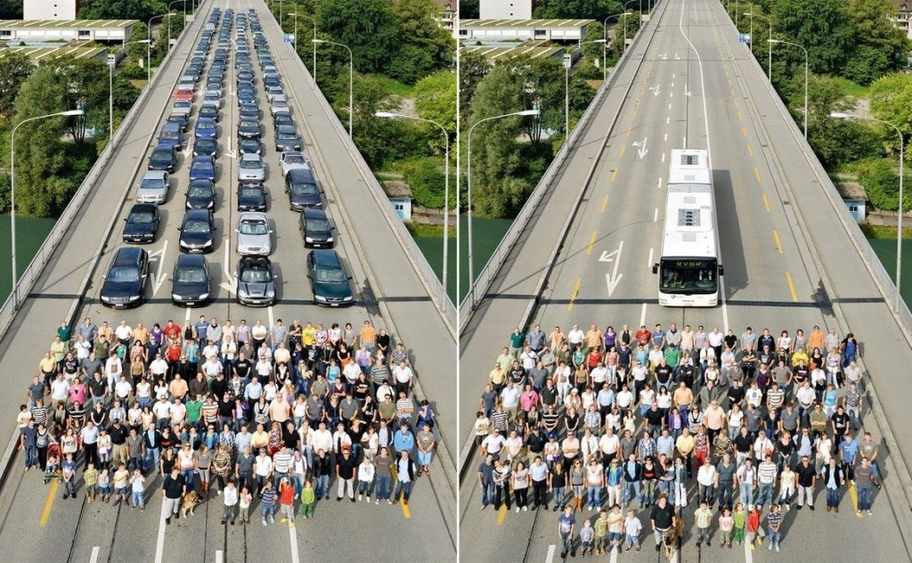
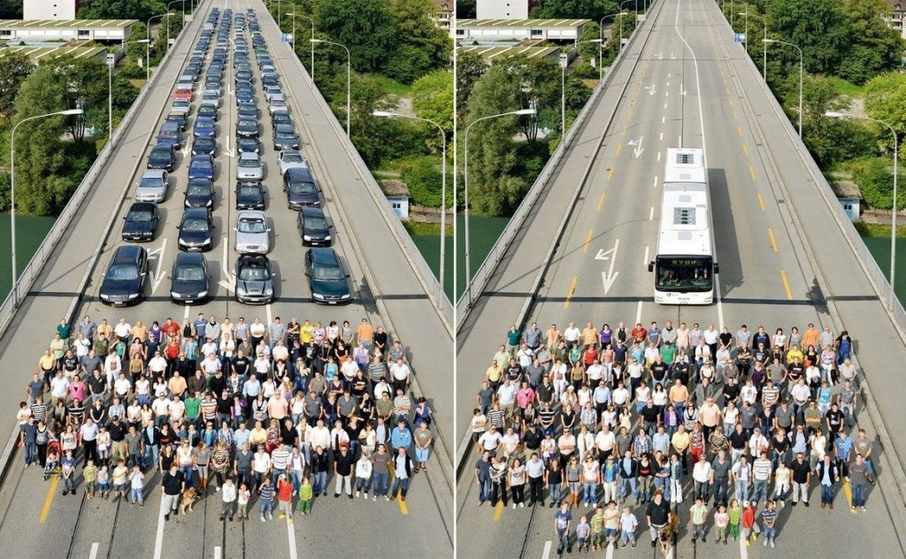

Экология:
спасем планету
8 способов, как каждый из нас может внести свой вклад в спасение окружающей среды
1. Сортировка отходов
Сортировка мусора позволяет перерабатывать сырьё. Например, для изготовления бумаги не нужно вновь пилить лес, достаточно переработать макулатуру. Кроме того, сортировка мусора даёт возможность утилизировать опасные отходы, которые при попадании в воду или почву, отравляют её (например, ртутные градусники). Также сортировка мусора позволяет сокращать размеры свалок. В нашей стране, например, общий размер мусорных полигонов составляет 4 млн гектаров. Сортируя мусор, каждый из нас может повлиять на экологию в будущем.
2. Замена пластика другими материалами
Сортировка отходов помогает решить проблему загрязнения планеты пластиком, а сокращение его использования просто эту проблему не создает. Например, вместо обычных пластиковых пакетов в магазинах можно использовать бумажные или тканевые сумки. Полиэтиленовые одноразовые пакеты пакеты можно заменить многоразовыми пластиковыми пакетами, например, из Икеи. Также можно объявить свой личный протест фирмам, которые используют много лишней пластиковой упаковки, количество которой можно сократить (например, огурцы, каждый из которых завернут в пластик, тогда как упаковку можно либо не использовать вообще, либо уаковывать по несколько огурцов в наборе, таким образом сократив количество используемого пластика). Если люди перестанут покупать продукцию такой фирмы, она начнет разоряться и, возможно, что-то изменит в своем отношении к пластику.
3. Экологичный транспорт
Одной из основных причин загрязнения воздуха и глобального потепления являются выхлопные газы машин, самолетов и другого транспорта. Поездку на машине можно заменить прогулкой пешком или прокатиться до работы на велосипеде. Это полезно и для вашего здоровья, и безвредно для окружающей среды. Кроме того можно чаще ездить на общественном транспорте или вовсе отказаться от личного автомобиля, ведь обычный автобус может вместить 70 человек, что гораздо экономнее, чем если бы каждый из них ехал в автомобиле. Как бонус от отказа от собственного авто - вам не придется тратить деньги на уход и починку автомобиля.
 


4. Разумное использование электричества
Получение электричества происходит посредством сжигания угля и газа, что является основным источником загрязнения воздуха. Не использовать электричество в современной жизни просто невозможно, но можно сократить его использование. Следите за тем, чтобы в комнатах, где включенный свет не является необходимостью, он был выключен. Выключайте электроприборы, если не используете их. Также можно использовать люминесцентные лампы малой мощности, чтобы сэкономить деньги и электроэнергию. Если вы живете в доме, а не квартире, вы можете использовать альтернативные источники энергии, например, установить на крыше дома солнечные батареи, если позволяет климат.
5. Экономия воды
Расходуя слишком много воды, мы оказываем значительное влияние на здоровье планеты, поэтому важно следить за тем, сколько воды вы используете. Например, выключайте воду во время мытья посуды, когда намыливаете ее. Также стоит выключать воду, когда чистите зубы. Используйте посудомоечные и стиральные машины только при полной загрузке, ведь они расходуют большое количество воды.
6. Сокращение использования химикатов
Химия, которой мы пользуемся в быту, смывается и впитывается в почву, оказываясь в итоге в водопроводной системе. Химикаты опасны как для растений, которые впитывают их из отравленной почвы, животных, которые эти растения употребляют в пищу, так и для людей. Чтобы сократить использование опасных химикатов, можно использовать альтернативы тем средствам, которыми вы обычно пользуетесь. Если безвредную альтернативу химическому средству найти невозможно, постарайтесь использовать его как можно меньше.
7. Повторное использование
Вместо того, чтобы выбрасывать старые вещи, такие как одежда, мебель, предметы декора, старые игрушки и другие вещи, можно продавать их, отдавать знакомым, относить в секондхэнды, давая вещам вторую жизнь. Также можно относить старые вещи в специальные пункты приема, например, ткани на переработку.